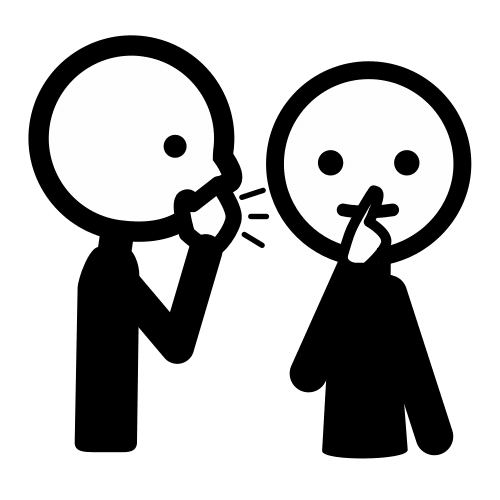
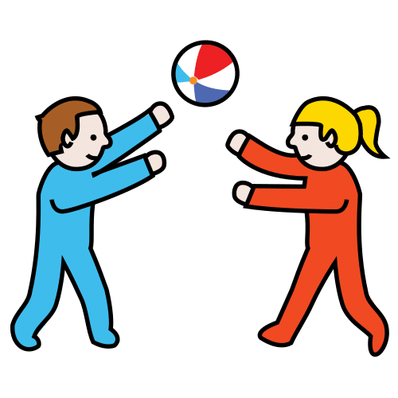

Juego de lectura · De 1.º a 3.º de Primaria
Detectives
de letras
Mensajes secretos para descifrar letra a letra. Cada dibujo de la clave empieza por el sonido de su letra.
Pictogramas: Sergio Palao. ARASAAC (Gobierno de Aragón). CC BY-NC-SA.
Licencia CC BY-NC-SA 4.0
ideducando.es
Tres niveles20 casoscon solución
Antes de empezar
De un vistazo
Detectives de letras es un juego para descifrar mensajes secretos. En la clave, cada letra tiene su dibujo. El peque
busca la letra de cada dibujo, la escribe y junta los sonidos para leer el mensaje. Está pensado para toda la clase de
1.º a 3.º de Primaria, y en especial para el alumnado con dislexia o con trastorno del desarrollo del lenguaje (TDL).
El truco de la clave
Cada dibujo empieza por el sonido de su letra: S de sol, M de mano, P de pez.
Quien descubre el truco ya no necesita buscar. Si nombrar le cuesta, busca el dibujo en la clave: también vale.
Tres niveles, veinte casos y una misión final
Antes de jugar, presenta la clave en voz alta: nombra cada dibujo y que la clase repita su primer
sonido. No cuentes el truco: deja que lo descubran. La guía de la página explica cómo
graduarlo y los ajustes para la dislexia y el TDL.
La clave secreta, dos copias para recortar y plastificar
La clave secreta · Una para cada pareja · Cartulina y plastificado
Corta por la línea de puntos
Carnet de detective, seis por hoja
Carnet de detective · Dibujo, nombre y huella antes de plastificar
Corta por la línea de puntos
Pictogramas: Sergio Palao. Origen: ARASAAC (arasaac.org). Licencia CC BY-NC-SA. Propiedad: Gobierno de Aragón. La
lupa y el diseño del carnet son de IdEducando.
Al revés · Para alguien de la clase
Escribe en clave
Detective:

Mi copia secreta: escribo aquí las letras
Corta por aquí y guarda tu copia
Arriba, en cada hueco de puntos, va el dibujo de la clave. Debajo, quien lo descifra escribe la letra. Pictogramas:
Sergio Palao. Origen: ARASAAC (arasaac.org). Licencia CC BY-NC-SA. Propiedad: Gobierno de Aragón.
Registro personal
Mis casos resueltos
Detective:
 Cuando compruebes un caso, colorea su carpeta. Al acabar un nivel, colorea su placa.
Cuando compruebes un caso, colorea su carpeta. Al acabar un nivel, colorea su placa.
Misión final
Lo que más me ha gustado:
Lo que más me ha costado:
Colorea los dibujos que ya sabes sin mirar la clave.
Pictograma: Sergio Palao. Origen: ARASAAC (arasaac.org). Licencia CC BY-NC-SA. Propiedad: Gobierno de Aragón.
Tarjetas de solución y etiquetas de los sobres
Soluciones · Cada tarjeta, en el sobre de su nivel · Cartulina y plastificado
Corta por la línea de puntos
Pictogramas: Sergio Palao. Origen: ARASAAC (arasaac.org). Licencia CC BY-NC-SA. Propiedad: Gobierno de Aragón.
Diploma de detective de letras, dos por hoja
Diplomas · Van en el sobre de la misión final
Corta por la línea de puntos
Guía para el docente
Detectives de letras: cómo jugar y cómo ajustarlo
En la clave, cada letra tiene un dibujo que empieza por su sonido. Al descifrar, el peque pasa de los dibujos a las
letras y junta los sonidos para leer. Al escribir en clave hace el camino al revés: separa los sonidos.
Por qué ayuda
-
Letras y sonidos, de forma explícita. Enseñar de forma sistemática las relaciones entre letras y
sonidos ayudó a leer más que otros enfoques, sobre todo en los primeros cursos y también con dificultades (National
Reading Panel o NRP, 2000, págs. 2-92 a 2-94). Una guía de prácticas para Infantil a 3.º da evidencia fuerte a unir
sonidos y letras y a descifrar juntando sonidos de izquierda a derecha (Foorman y otros, 2016, recomendaciones 2 y
3).
-
Conciencia fonológica, con letras. Trabajar los sonidos funcionó mejor con letras: juntarlos ayuda a
leer y separarlos ayuda a escribir (NRP, 2000, págs. 2-4 y 2-6). La misma guía propone presentar cada letra con el
dibujo de una palabra conocida que tenga su sonido (Foorman y otros, 2016, pág. 19).
-
En castellano. En un estudio europeo, los 40 niños y niñas de 1.º de España leían sin error casi el
95 % de las palabras conocidas al acabar el curso (Seymour y otros, 2003): el juego sirve para afianzar y para
quien va a otro ritmo. El currículo espera que en Primaria se adquiera y se consolide el código escrito (Real
Decreto 157/2022, anexo II).
-
Dislexia. En castellano se nota sobre todo en la velocidad lectora (Serrano y Defior, 2008): por
eso el juego no lleva reloj. En un metaanálisis de ensayos aleatorizados, enseñar las relaciones entre letras y
sonidos fue el único enfoque con efecto probado en el alumnado con dificultades lectoras (Galuschka y otros, 2014).
-
Trastorno del desarrollo del lenguaje (TDL). Con 61 niños y niñas de 5 a 7 años con dificultades del lenguaje oral, un programa integrado de
conciencia fonológica mejoró esa conciencia y su lectura más que otros apoyos (Gillon, 2000).
-
Lo que no sabemos. El juego, como conjunto, no se ha estudiado. Lo que no lleva fuente es propuesta de
IdEducando.
Cómo se juega
-
Presenta la clave. Nombrad juntos cada dibujo y repetid su primer sonido: /sss/ de sol. No cuentes el
truco: deja que lo descubran.
-
Resuelve un caso en voz alta. «Un sol: /s/. Busco la ese y la escribo». Junta los sonidos sin
cortarlos: /sssooolll/.
- Primero, en parejas: uno busca y el otro escribe. Después, cada cual en su nivel.
-
Comprueba. Al terminar la hoja, saca su tarjeta del sobre de soluciones, compara y colorea sus
carpetas en «Mis casos resueltos».
-
Al revés y misión final. Cuando domine un nivel, que escriba un mensaje para alguien de la clase. Al
acabar el nivel 3, la misión final le lleva a los diplomas.
La clave, dibujo a dibujo
Ojo: la h no suena (en hueso se oye /ue/), la b y la v suenan igual, y la c y la g cambian delante de e o de i (cena,
gente). En el nivel 1, la foto es una pista y los arcos marcan las sílabas.
Tres niveles para toda la clase
El Diseño Universal para el Aprendizaje (DUA) propone apoyar la decodificación, optimizar los desafíos y el apoyo, y
fomentar la alegría y el juego (CAST, 2024, consideraciones 2.2, 8.2 y 7.3).
-
Nivel 1, círculo: palabras de dos sílabas directas con letras de un solo sonido, un dibujo de pista y
un arco bajo cada sílaba.
-
Nivel 2, cuadrado: palabras de tres sílabas con ñ, ll o j, para rodear su dibujo entre tres que
empiezan igual, y órdenes cortas con h, gu, rr y z.
- Nivel 3, rombo: adivinanzas de cinco o seis palabras y la misión final.
Más apoyo: en pareja, tapando en la clave las letras que sobran o leyendo tú el primer dibujo.
Más reto: sin mirar la clave, inventar casos para la clase o escribir la misión final de otro grupo.
Las parejas fomentan además la colaboración (consideración 8.3).
Ajustes para la dislexia
- Letra grande: lo que lee el peque va a 18 puntos o más. Para ampliarlo, imprime en A3 al 141 %.
-
Espacio: un caso cada vez, con los demás tapados por un folio. Con 74 niños y niñas con dislexia de 8
a 14 años, separar más las letras redujo los errores al leer un texto (Zorzi y otros, 2012). Por eso cada dibujo va en
su casilla.
-
Sin prisa: sin reloj, sin carreras y sin leer delante de la clase si no quiere. La Región de Murcia
pide darle más tiempo para hacer y revisar sus tareas y no exigirle que lea como sus compañeros (Resolución de 30 de
julio de 2019, anexo I).
- En pareja: Murcia propone la enseñanza entre compañeros en las tareas con mucha lectura (anexo I).
- El sonido, no el nombre: decid /m/ y no «eme», que así se juntan mejor.
- Si escribe una letra al revés, como la b por la d, que la compare con la clave: aquí cuenta lo que descifra.
Ajustes para el TDL
-
Primero, las palabras: nombra antes los dibujos de la clave y las pistas, y comprueba que los conoce.
Murcia propone escribir las palabras nuevas en la pizarra y apoyarse en dibujos (anexo V).
-
Una indicación cada vez, corta y con su dibujo. Espera antes de repetirla: Murcia habla de una pausa
de al menos 10 segundos (anexo V).
- Comprueba que entiende, además de que descifra: que señale el dibujo o haga la orden.
Qué observar
Si nombra los dibujos o los busca, qué letras le cuestan, si junta los sonidos de corrido y si entiende lo que lee. En
las adivinanzas vale cualquier respuesta con sentido: un pino también tiene agujas. Apúntalo con iniciales y sin el
diagnóstico.
Seguridad
- Para llevar el carnet puesto, mejor una pinza en el jersey que un cordón al cuello.
- Huellas con tinta lavable o lápiz blando, y manos limpias después.
Convivencia y privacidad
- Cada cual va a su ritmo: sin tablas de puntos ni carreras.
- En el carnet, un dibujo: no hace falta foto. El registro es personal.
Con otros materiales de IdEducando
Antes de las letras, los sonidos y las sílabas se trabajan con
El tren de las sílabas. Si cuestan las
sílabas como bla o tre, la
Cartilla de sílabas trabadas.
Para las familias
Detectives de letras, también en casa
En clase jugamos a descifrar mensajes secretos. Cada letra tiene un dibujo en una clave, y cada dibujo empieza por el
sonido de su letra: S de sol, M de mano. Para leer el mensaje, el peque busca la letra de cada dibujo y junta los
sonidos. Es un juego, y también practica algo muy importante para leer: unir cada letra con su sonido.
 Cómo ayudar
Cómo ayudar
- Decid el sonido de cada letra, /m/, mejor que su nombre, «eme».
- Sin prisa. Si se atasca, buscad juntos el dibujo en la clave.
- Celebrad el esfuerzo: «¡Lo has descifrado!». Si se equivoca, comparad con la clave y probad otra vez.

Mensajes secretos en casa
Detectives de letras. IdEducando, noviembre de 2026. Licencia CC BY-NC-SA 4.0. Los dibujos de la
clave son de IdEducando. Los símbolos pictográficos utilizados son propiedad del Gobierno de Aragón y han sido
creados por Sergio Palao para ARASAAC (https://arasaac.org), que los distribuye bajo Licencia Creative Commons
BY-NC-SA.
Fuentes y créditos
De dónde sale este material
Detectives de letras. Equipo IdEducando, noviembre de 2026.
ideducando.es/material-gratuito/detectives-letras. Fuentes consultadas el 17/11/2026.
Letras, sonidos y conciencia fonológica
-
National Reading Panel (2000). Teaching children to read: An evidence-based assessment of the scientific research
literature on reading and its implications for reading instruction. Reports of the subgroups (NIH Publication
n.º 00-4754). National Institute of Child Health and Human Development, págs. 2-4, 2-6 y 2-92 a 2-94. nichd.nih.gov
-
Foorman, B. y otros (2016). Foundational skills to support reading for understanding in kindergarten through 3rd
grade (NCEE 2016-4008). National Center for Education Evaluation and Regional Assistance, Institute of Education
Sciences, U.S. Department of Education. Recomendaciones 2 y 3, págs. 14 a 31. whatworks.ed.gov
-
Seymour, P. H. K., Aro, M. y Erskine, J. M. (2003). Foundation literacy acquisition in European orthographies.
British Journal of Psychology, 94(2), 143-174. DOI: 10.1348/000712603321661859
Dislexia y trastorno del desarrollo del lenguaje
-
Galuschka, K., Ise, E., Krick, K. y Schulte-Körne, G. (2014). Effectiveness of treatment approaches for children and
adolescents with reading disabilities: A meta-analysis of randomized controlled trials. PLoS ONE, 9(2),
e89900. DOI: 10.1371/journal.pone.0089900
-
Serrano, F. y Defior, S. (2008). Dyslexia speed problems in a transparent orthography. Annals of Dyslexia,
58(1), 81-95. DOI: 10.1007/s11881-008-0013-6
-
Zorzi, M. y otros (2012). Extra-large letter spacing improves reading in dyslexia. Proceedings of the National
Academy of Sciences, 109(28), 11455-11459. DOI: 10.1073/pnas.1205566109
-
Gillon, G. T. (2000). The efficacy of phonological awareness intervention for children with spoken language
impairment. Language, Speech, and Hearing Services in Schools, 31(2), 126-141. DOI:
10.1044/0161-1461.3102.126
-
Bishop, D. V. M., Snowling, M. J., Thompson, P. A., Greenhalgh, T. y CATALISE-2 consortium (2017). Phase 2 of
CATALISE: a multinational and multidisciplinary Delphi consensus study of problems with language development:
Terminology. Journal of Child Psychology and Psychiatry, 58(10), 1068-1080. DOI: 10.1111/jcpp.12721
Normativa y DUA
-
Real Decreto 157/2022, de 1 de marzo, por el que se establecen la ordenación y las enseñanzas mínimas de la Educación
Primaria. Boletín Oficial del Estado (BOE) n.º 52, de 2 de marzo de 2022, anexo II, Lengua Castellana y Literatura,
págs. 24457, 24465 y 24469.
-
Resolución de 30 de julio de 2019 de la Dirección General de Atención a la Diversidad y Calidad Educativa, por la que
se dictan instrucciones para la identificación y la respuesta educativa a las necesidades del alumnado que presenta
dificultades de aprendizaje. Boletín Oficial de la Región de Murcia (BORM) n.º 184, de 10 de agosto de 2019, anexo I,
págs. 25054 a 25056, y anexo V, págs. 25062 y 25063.
-
CAST (2024). Las Directrices del Diseño Universal para el Aprendizaje, versión 3.0, consideraciones 2.2, 7.3,
8.2 y 8.3. udlguidelines.cast.org/es
Dibujos, pictogramas y licencia
Los 27 dibujos de la clave, los sellos, las carpetas y el diseño son de IdEducando. Los pictogramas son de ARASAAC, el
Centro Aragonés para la Comunicación Aumentativa y Alternativa. Su licencia pide citar este texto: «Los símbolos
pictográficos utilizados son propiedad del Gobierno de Aragón y han sido creados por Sergio Palao para ARASAAC
(https://arasaac.org), que los distribuye bajo Licencia Creative Commons BY-NC-SA». Con pictogramas de ARASAAC, este
material no se puede vender: es gratis y lo será siempre. Licencia CC BY-NC-SA 4.0: puedes copiarlo y adaptarlo
citando a IdEducando, sin fines comerciales y con la misma licencia.